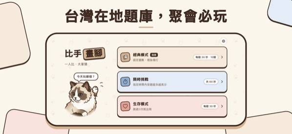
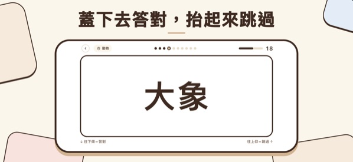
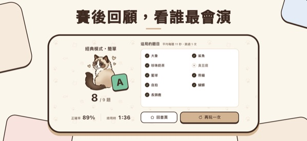

比手畫腳：手機放額頭，朋友演、你來猜
聚會冷場、等上菜、家族聚餐都能玩。猜題的人把手機舉在額頭，其他人用動作和聲音給提示；猜對把手機往下蓋，想跳過就往上抬，App 自動計分。
App Store 免費下載iPhone、iPad（iOS 15 以上）・沒有 Android 版



比手畫腳 App 重點
- 題目
- 超過 2,000 題、12 類：網路梗、美食、動物、動作、影視、職業、物品、地點、娛樂、運動、成語、K-POP
- 模式
- 經典、限時挑戰、生存，另有三種難度
- 人數
- 兩個人就能玩，人越多越熱鬧
- 裝置
- iPhone、iPad，iOS 15 以上
- 費用
- 免費下載；完整版一次買斷，不是訂閱
比手畫腳怎麼玩
一支手機就能開局，不用準備紙筆。
選分類和模式
挑題目分類，再選經典、限時挑戰或生存模式，以及難度。
手機放額頭
猜題的人把手機橫著舉在額頭，螢幕朝外，自己看不到題目。
朋友比、你來猜
其他人用動作、表情或聲音提示，不能直接說出答案。
蓋下或抬起
猜對把手機往下蓋，跳過就往上抬；iPad 點右邊算猜對、點左邊跳過。時間到看成績，換下一個人上場。
三種模式和自訂題目
同一套題庫，節奏不同的玩法。
- 經典模式預設每回合 10 題、每題 30 秒，適合輪流上場。
- 限時挑戰45、60 或 90 秒內盡量多猜，比誰分數高。
- 生存模式跳過 3 次就出局，看誰撐最久。
- 自訂題目朋友的名字、班上的梗都能變成題目，一次可以加很多題。
- 錄下反應用前鏡頭錄下猜題過程，玩完一起看大家的表情，也能存到相簿。
題目範例
美食有珍珠奶茶、雞排、鹽酥雞、麻婆豆腐；動物有貓咪、松鼠、水豚；動作有自拍、翻跟斗；影視有變形金剛、復仇者聯盟；職業有醫生、工程師；成語有雞飛狗跳、對牛彈琴。題目從簡單到困難都有，小朋友和大人都能一起玩。
費用
下載免費。免費版每個分類只抽部分題目，看一支短片就能在這一局玩全部題目，錄影也一樣。完整版是一次買斷，不是訂閱：永久解鎖全部題目與錄影，並去除廣告；換手機在 App 內按「恢復購買」即可找回。
常見問題
比手畫腳要幾個人玩？
兩個人就能玩，一個猜、一個比；人多可以分隊輪流，比哪一隊猜對最多。
怎麼算猜對？
手機往下蓋算猜對、往上抬算跳過，App 自動計分。在 iPad 上點螢幕右邊算猜對、左邊跳過。
題目是台灣用語嗎？
是。題目用台灣常見說法，有台灣小吃、網路梗和成語；介面換成英文時，題目也會換成英文。
可以自己出題嗎？
可以。在自訂題目裡輸入，用逗號或換行一次加好幾題。
比手畫腳要訂閱嗎？
不用。下載免費，完整版一次買斷、永久使用。
有 Android 版嗎？
目前只有 iPhone、iPad 版（iOS 15 以上）。